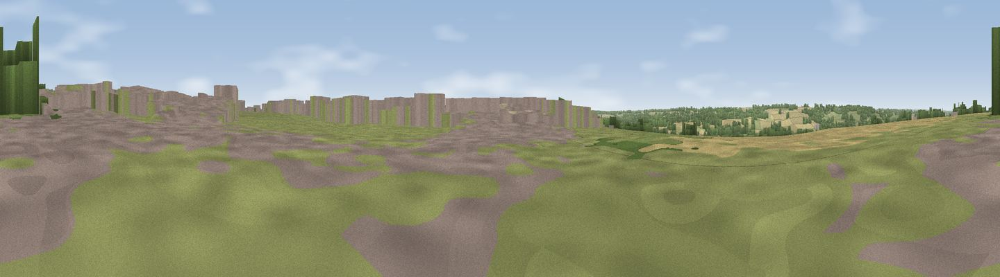

Viewpoint near Upper Heyford
#29526 in England · top 34% of its area beats it · near Upper Heyford · access?Where it is
The exact computed spot (SP 66975 61575). Click the marker for map links.
Public access: no public right of way or access land is recorded at this exact spot — it may be on private land. Computed from Natural England's CRoW access layer and OpenStreetMap rights of way — not the legal definitive map. Always verify locally.
The view, rendered

A 360° render of this exact spot computed from the terrain model, tree cover and land cover — summer colours, afternoon light, calibrated against photographs of famous viewpoints. Real trees, hedges and buildings will differ in detail.
The panorama
Grey silhouette: terrain skyline in each direction (720 bearings, Earth curvature and refraction included). Dashed green: skyline with trees (+15 m) and buildings (+8 m) as obstacles. Blue strip: how far the ground is visible on each bearing.
Where the view opens
Wedge length = distance to the farthest visible ground on that bearing (vegetation-aware). Rings at 10, 25 and 50 km.
What fills the view
49% grassland · 38% cropland · 12% woodland · 1% built-up
Angular shares of the visible panorama (visual magnitude), not map area. Landscape diversity 0.45 (0–1 Shannon).
Key numbers
More beautiful places nearby
The staircase of upgrades: each row has a higher view potential than everything closer. Driving times are estimates from straight-line distance, calibrated against real road routing — check an actual route before setting out.
| Place | Direction | Drive | Score |
|---|---|---|---|
| Glassthorpe Hill | SSW · 1 km | ~3 min | 44.2 |
| Viewpoint near Long Buckby | NNW · 7 km | ~14 min | 45.2 |
| Viewpoint near Daventry | W · 8 km | ~17 min | 47.0 |
| Viewpoint near Norton | WNW · 8 km | ~17 min | 52.0 |
| Viewpoint near Staverton | W · 12 km | ~22 min | 54.0 |
| Big Hill - Staverton Clump | W · 12 km | ~22 min | 68.4 |
| Viewpoint near Northend | WSW · 29 km | ~45 min | 69.7 |
| Viewpoint near Northend | WSW · 29 km | ~45 min | 70.3 |
52.24829, -1.02041 · source: screening · position refined by local search. Computed location — check access rights before visiting.